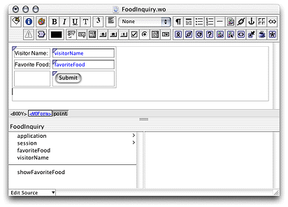

| PATH |

In this section you'll create a WebObjects component called
FoodInquiry that contains a WOForm element with two WOTextFields
and a WOSubmitButton. The FoodInquiry page is displayed by a direct
action, which itself is invoked by a JSP page that provides the FoodInquiry
component with initial values for its form elements using <wo:formValue> tags.
<%-- LogIn.jsp --%>
<%@ taglib uri="/WOtaglib" prefix="wo" %>
<wo:directAction actionName="login" className="LoginAction" bodyContentOnly="false">
<wo:formValue key="VisitorName" value='<%= "enter name" %>' />
<wo:formValue key="FavoriteFood" value='<%= "enter food" %>' />
</wo:directAction>LogIn.jsp in
the JSP_Example/Servlet Resources/jsp directory.visitorName and favoriteFood String
keys to the component (create accessor methods). Also add the showFavoriteFood action
returning the FavoriteFood component.When you're done, FoodInquiry.java should
look like Listing 3-3. (Note that if you use WebObjects Builder to add
the keys and the action, you need to add a couple of lines of code
to the showFavoriteFood method.
Listing 3-3 FoodInquiry.java
import com.webobjects.foundation.*;
import com.webobjects.appserver.*;
import com.webobjects.eocontrol.*;
import com.webobjects.eoaccess.*;
public class FoodInquiry extends WOComponent {
protected String visitorName;
protected String favoriteFood;
public FoodInquiry(WOContext context) {
super(context);
}
public FavoriteFood showFavoriteFood() {
FavoriteFood nextPage = (FavoriteFood)pageWithName("FavoriteFood");
// set the properties of the FavoriteFood component
nextPage.setVisitorName(visitorName);
nextPage.setFavoriteFood(favoriteFood);
return nextPage;
}
public String visitorName() {
return visitorName;
}
public void setVisitorName(String newVisitorName) {
visitorName = newVisitorName;
}
public String favoriteFood() {
return favoriteFood;
}
public void setFavoriteFood(String newFavoriteFood) {
favoriteFood = newFavoriteFood;
}
}Figure 3-9 The FoodInquiry component in WebObjects Builder
showFavoriteFood action.Food Inquiry as
the component's title.VisitorName"
as the value for the name attribute
of the WOTextField that corresponds to the Visitor Name label.FavoriteFood"
as the value for the name attribute
of the WOTextField that corresponds to the Favorite Food label.loginAction method (listed
below) to the DirectAction class.
public WOActionResults loginAction() {
FoodInquiry result = (FoodInquiry)pageWithName("FoodInquiry");
// get form values
String visitorName = request().stringFormValueForKey("VisitorName");
String favoriteFood= request().stringFormValueForKey("FavoriteFood");
// set the component's instance variables
result.setVisitorName(visitorName);
result.setFavoriteFood(favoriteFood);
return result;
}jsp directory
of the project as LogIn.jsp.
<%-- LogIn.jsp --%>
<%@ taglib uri="/WOtaglib" prefix="wo" %>
<wo:directAction actionName="login" className="LoginAction" bodyContentOnly="false">
<wo:formValue key="FavoriteFood" value='<%= "enter food" %>' />
<wo:formValue key="VisitorName" value='<%= "enter name" %>' />
</wo:directAction>To view the output of the LogIn JSP page in Tomcat use the following URL:
http://localhost:8080/JSP_Example/jsp/LogIn.jsp
You should see a page like the one in Figure 3-10.
Figure 3-10 The output of LogIn.jsp